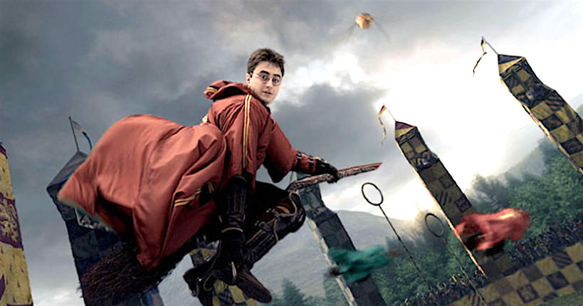
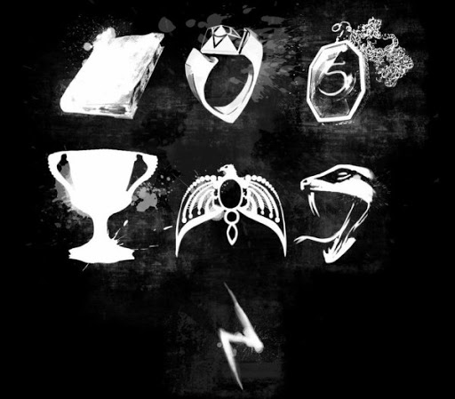

-le quidditch est un sport de haut niveau avec comme seuls outils nôtre balais et nos bras. Le quidditch se déroule en 4 manches et elle est constituée de deux équipes de 5 avec un batteur, un attrapeur et trois lanceurs.
Ce sport nous montre aussi comment Harry fini a l'hopital dans le tome 2 :)
Nous avons 7 Horcruxes qui aprèse avoir été détruit, tue le seigneur des tennebres "Vol de Mort .
C'est objets on valu a Harry de risquer sa vie pas la venue d'un Horcrux étant en lui.
Les reliques sont des objet magiques puissant et dont Harry en possède 1
Les reliques de la mort ont été créer a la base pour contenir une source de magie dévastatrice et ensemble détruire le monde des sorcier c'est objet permettre de détruire la mort,comme par exemple la cape d'invisibilité permets de ce cacher de la mort, la baguette permets de ce comfronté a la mort et la pierre permets de rettenté sa chance si la mort nous attrape.